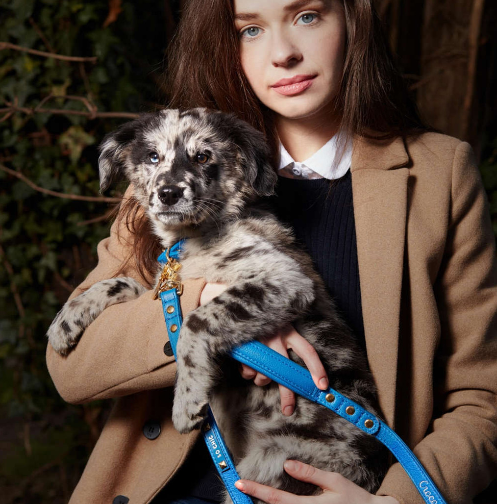
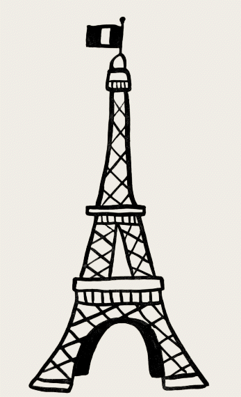
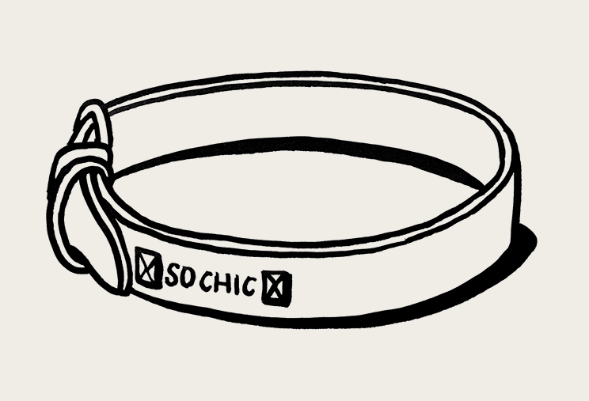
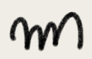
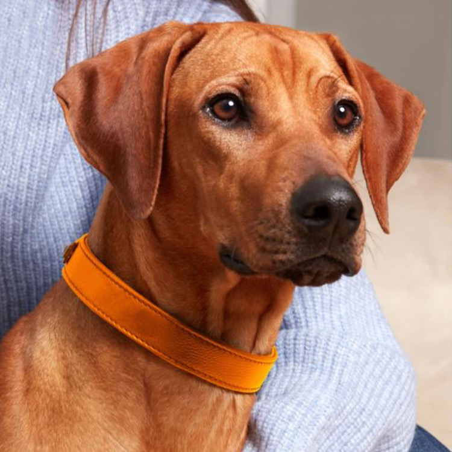
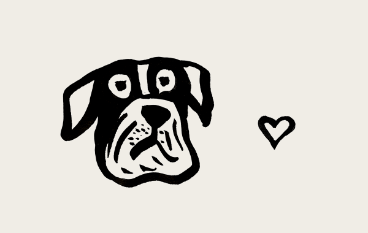
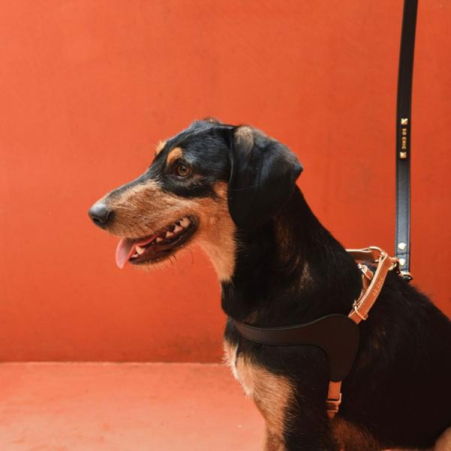
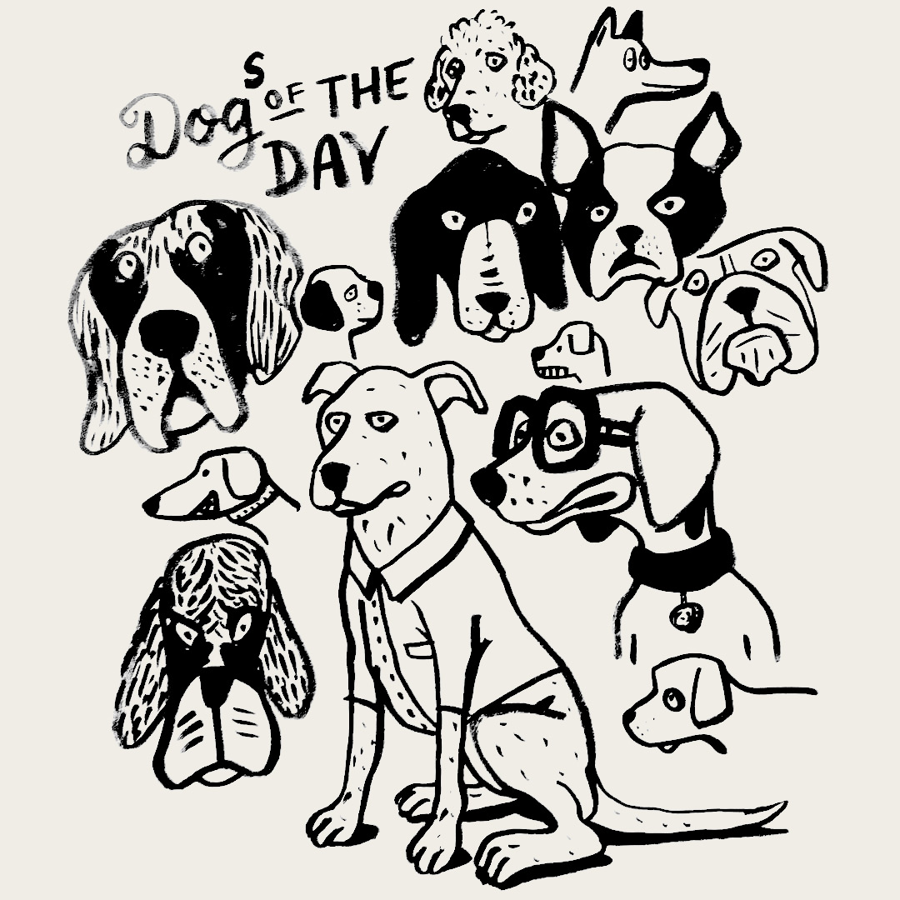

먹고, 쉬고, 산책하는 모든 순간들이
한 폭의 예술이 됩니다.
아름다우면서도 고품질의 제품을 만들기 위해 세계적인 명품 브랜드 출신의
유명 아티스트들이 협력하고 있으며, 각 분야의 장인과 소비자와의 소통을 통해
최고의 품질과 가치를 전달하고, 최고의
스타일을 선물합니다.




먹고, 쉬고, 산책하는 모든 순간들이
한 폭의 예술이 됩니다.






펫 소 시크의 모든 제품은 ‘삶 속의 예술
(Art de vivre)’이라는 프랑스인들의
생활
철학을 담고 있습니다.
세계적인 명품 가죽 브랜드 H사 출신의
아티스트가 직접 디자인하고,
프랑스 수의사팀의 꼼꼼한 승인을 받아,
반려동물의 움직임과 특성을 고려한 설계로
우리 아이들에게 안전성과 편안함을
제공합니다.


